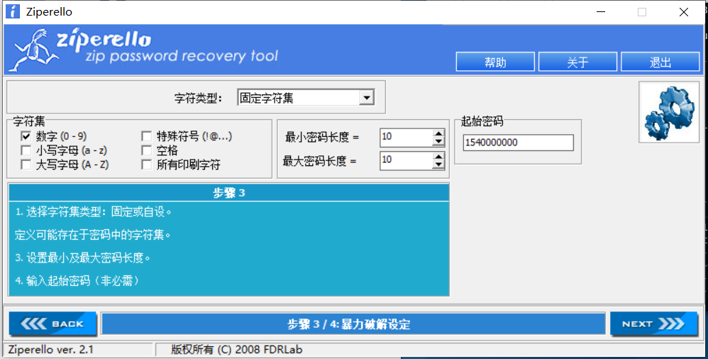
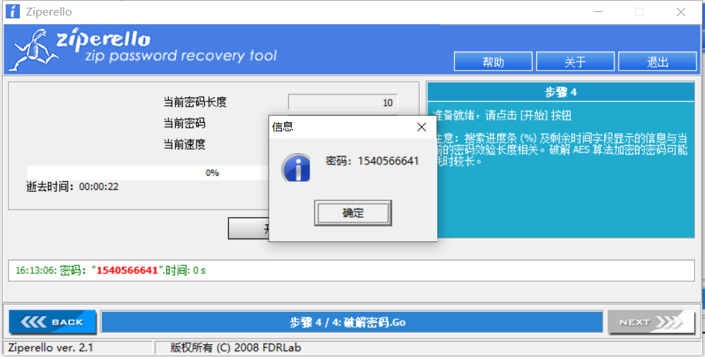
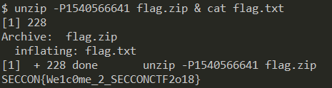
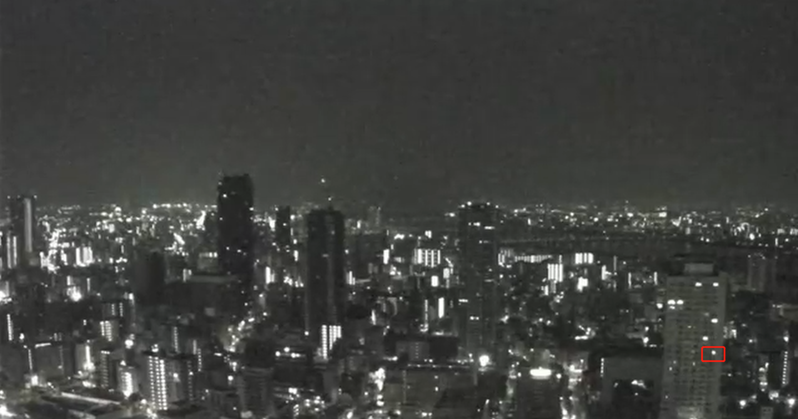
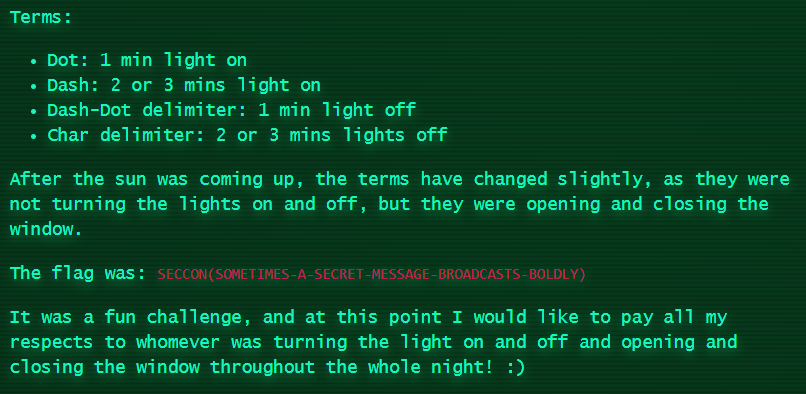

Forensics
Unzip
压缩命令为
1
2
| echo 'SECCON{'`cat key`'}' > flag.txt
zip -e --password=`perl -e "print time()"` flag.zip flag.txt
|
update:
比较棒的思路是flag.zip生成时刻的时间戳就是他的密码。那么
1
2
| $stat -c %Y flag.zip
1540566641
|
爆破密码：



History
1
2
3
4
5
6
7
8
9
10
11
12
13
14
15
16
17
18
19
20
21
22
23
24
25
26
27
28
29
30
31
32
| $ binwalk J
DECIMAL HEXADECIMAL DESCRIPTION
--------------------------------------------------------------------------------
3912330 0x3BB28A ARJ archive data, header size: 22472, version 1, minimum version to extract: 1, compression method: stored, file type: binary, original name: "1", original file date: 1970-01-01 00:00:00, compressed file size: 538968064, uncompressed file size: 1441792, os: MS-DOS
$ strings -el J | grep SEC
...foo...
<SEC{.txt
...bar...
$ strings -el J | grep CON
...foo...
<CON{.txt
...bar...
$ strings -el J | grep .txt | uniq
...foo...
<SEC.txt
<CON{.txt
<F0r.txt
<tktksec.txt
<F0r.txt
<ensic.txt
<s.txt
<_usnjrnl.txt
<2018}.txt
<logfile.txt.0
$ strings -el J | grep .txt | uniq | tail -n 10 | sed -E 's/<(.*).txt.*/\1/g' | tr -d '\n' | grep -o 'SECCON{.*}'
SECCON{F0rtktksecF0rensics_usnjrnl2018}
|
Reversing
Runme
misc式的水题。就是不断跟进函数，每个函数传入一个参数，拼凑起来就可以了。会得到 "C:\Temp\SECCON2018Online.exe" SECCON{Runn1n6_P47h} 。
update:
比较骚的做法是直接strings
1
2
3
4
5
6
7
8
9
10
11
12
13
14
15
| $ strings runme
!This program cannot be run in DOS mode.
...foo...
BRjS
BRjE
BRjC
BRjC
BRjO
BRjN
BRj{
BRjR
BRju
...bar...
$ strings runme | sed -E 's/BRj(.)/\1/g' | tr -d '\n' | grep -o 'SECCON{.*}'
SECCON{Runn1n6_P47h}
|
Needle in a haystack
提供一个YouTube的视频链接（https://www.youtube.com/watch?v=sTKP2btHSBQ ），长达九个多小时。
从 https://y2mate.com/youtube/sTKP2btHSBQ 下载360p的，差不多1.9G。快进查看会发现右下角有一个房间的灯亮灭很有规律，基本每分钟都会有变化。

我们把亮记为1，暗记为0的话，整个视频时长545分钟，可以得到约545比特的信息。大概是这样：
1
| 010101000100011101011101000111010111010001110111011100011101000111010111011101000101010001110111011100011101110001000111000101000111011100010001010100011101010101011100010111000111010101010111000101010001000111010111010001011101000100011100011101010101011100011101110001000101010001010100010111000111011101000100011101010101011100011101010100010111010001110111011100010111000111010100011101011101000101110001010100011100001010111000101010101000111000101010111000100010001110100010101110001010111010001010111000101000100011100010100010001010001111
|
其中有四种数据，0，1 ，000 ，111 ，分别对应亮、暗、长亮、长暗四种状态，对应到摩斯电码则是. ，短间隔，- ，长间隔 。
1
2
3
4
5
6
7
8
9
10
11
12
13
14
15
16
17
18
19
20
21
22
23
24
25
|
def do(s):
res=''
i=0
while i<len(s):
if s[i:i+3] == '000':
res+=' '
i+=3
elif s[i:i+3] == '111':
res+='-'
i+=3
elif s[i] == '1':
res+='.'
i+=1
elif s[i] == '0':
i+=1
return res
raw='01010100010001110101110100011101011101000111011101110001110100011101011101110100010101000111011101110001110111000100011100010100011101110001000101010001110101010101110001011100011101010101011100010101000100011101011101000101110100010001110001110101010101110001110111000100010101000101010001011100011101110100010001110101010101110001110101010001011101000111011101110001011100011101010001110101110100010111000101010001110??01010111000101010101000111000101010111000100010001110100010101110001010111010001010111000101000100011100010100010001010001111'
may='010101000100011101011101000111010111010001110111011100011101000111010111011101000101010001110111011100011101110001000111000101000111011100010001010100011101010101011100010111000111010101010111000101010001000111010111010001011101000100011100011101010101011100011101110001000101010001010100010111000111011101000100011101010101011100011101010100010111010001110111011100010111000111010100011101011101000101110001010100011100001010111000101010101000111000101010111000100010001110100010101110001010111010001010111000101000100011100010100010001010001111'
print(do(may))
|
天亮后看得很不清晰了，而且貌似 6h58min 之后窗户都会间歇性地被关上，所以flag的后半段有点问题。
update:
实际上天亮以后用窗户的开关来表示，窗户打开为1，窗户关闭为0（正好和原来的处理方式01相反，所以得不到flag），思维太僵硬啊😂
那么就得到如下结果：
1
2
3
| 010101000100011101011101000111010111010001110111011100011101000111010111011101000101010001110111011100011101110001000111000101000111011100010001010100011101010101011100010111000111010101010111000101010001000111010111010001011101000100011100011101010101011100011101110001000101010001010100010111000111011101000100011101010101011100011101010100010111010001110111011100010111000111010100011101011101000101110001010100011100010101000111010101010111000111010101000111011101110001011101010001110101000101110101000111010111011100011101011101110101110000
... . -.-. -.-. --- -. -.--. ... --- -- . - .. -- . ... -....- .- -....- ... . -.-. .-. . - -....- -- . ... ... .- --. . -....- -... .-. --- .- -.. -.-. .- ... - ... -....- -... --- .-.. -.. .-.. -.-- -.--.-
SECCON(SOMETIMES-A-SECRET-MESSAGE-BROADCASTS-BOLDLY)
|
这个图片解释得很到位了，不过我觉得徒手开关两个多小时的窗户太不黑客了吧，他们一定用了某种方式自动化。

update2:
有大佬做了自动化，效果蛮好的。
（https://ctf-writeups.ru/2k18/seccon-2018-online-ctf/needle_in_a_haystack/ ）